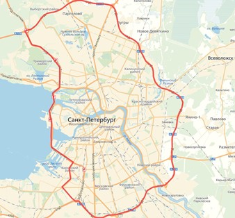
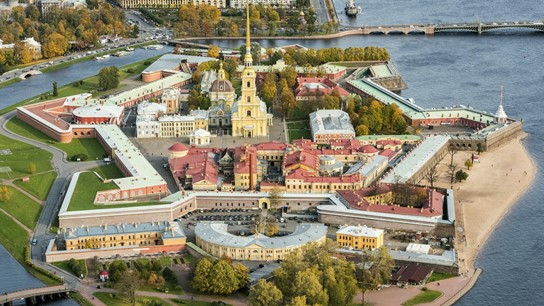
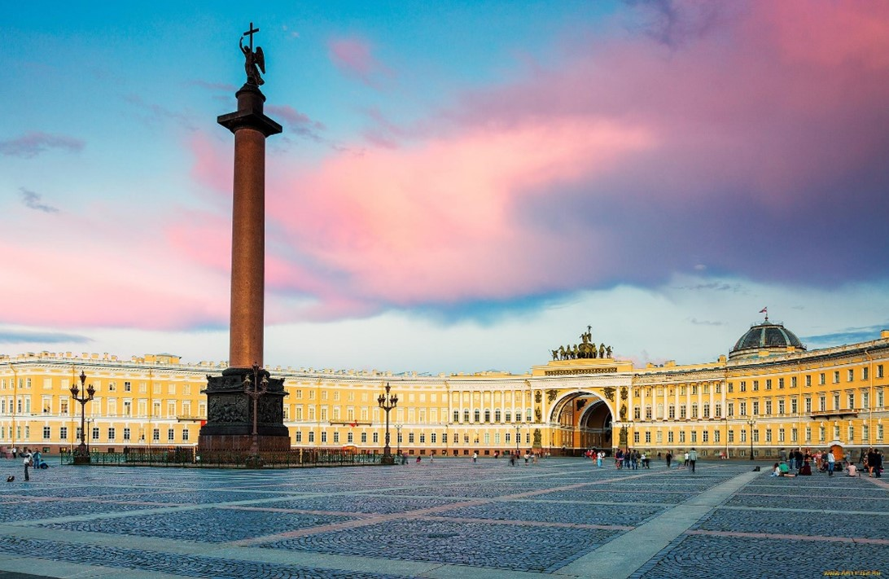
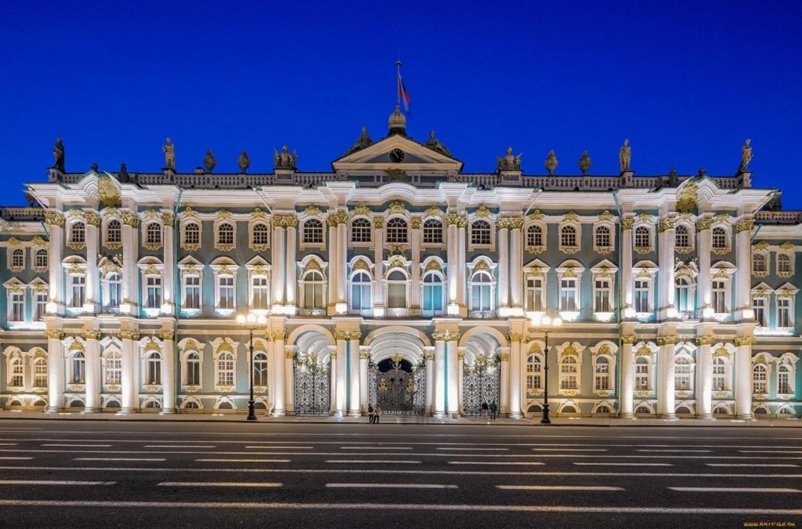
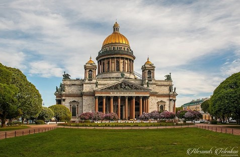
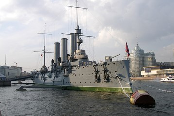

• Официальный сайт города - https://www.gov.spb.ru//
• Дополнительные информационные ресурсы:
https://ru.wikipedia.org/wiki/Санкт-Петербург
https://www.tutu.ru/geo/rossiya/kurort/saint_petersburg/
• Общие сведения о городе:
Санкт-Петербу́рг (в 1914—1924 годах — Петрогра́д, в 1924—1991 годах — Ленингра́д, разг. — Пи́тер, Петербу́рг, СПб) — второй по численности населения город России. Город федерального значения. Административный центр Северо-Западного федерального округа. Основан 16 (27) мая 1703 года царём Петром I. В 1714—1728 и 1732—1918 годах — столица Российского государства.
Назван в честь святого Петра — небесного покровителя царя-основателя, но со временем стал всё больше ассоциироваться с именем самого Петра I. Город исторически и культурно связан с рождением Российской империи и вхождением России в современную историю в роли европейской великой державы.
Население - 5 597 763 человек.
Площадь города - 1439 км².
Климат умеренный, переходный от умеренно континентального к умеренно морскому. За год в городе бывает в среднем 62 солнечных дня. Поэтому на протяжении бо́льшей части года преобладают дни с облачной пасмурной погодой, рассеянным освещением. Продолжительность дня меняется от 5 часов 51 минуты 22 декабря до 18 часов 50 минут 22 июня. В городе наблюдаются так называемые Белые ночи (принято считать, что они наступают 25—26 мая и заканчиваются 16—17 июля), когда солнце опускается за горизонт не более чем на 9° и вечерние сумерки практически сливаются с утренними. В общей сложности продолжительность белых ночей более 50 дней. Годовая амплитуда сумм прямой солнечной радиации на горизонтальную поверхность при ясном небе от 25 МДж/м² в декабре до 686 МДж/м² в июне. Облачность уменьшает в среднем за год приход суммарной солнечной радиации на 21 %, а прямой солнечной радиации на 60 %. Среднегодовая суммарная радиация составляет 3156 МДж/м².
Санкт-Петербург — крупнейший транспортный узел северо-запада России и второй в стране после Москвы. Он включает в себя железные дороги, морской и речной транспорт, автомобильные дороги и авиалинии. Через город проходят: два евразийских транспортных коридора «Север — Юг» и «Севсиб», панъевропейский транспортный коридор № 9, европейский автомобильный маршрут E 18, связывающие Скандинавию с центром России.
Санкт-Петербург является культурным центром мирового значения, часто его называют «Культурной столицей» России. В городе располагаются 8464 объекта культурного наследия (памятники истории и культуры), в том числе 4213 объектов культурного наследия федерального значения, что составляет почти 10 % всех памятников, охраняемых государством на территории Российской Федерации.
Санкт-Петербург является культурным центром мирового значения, часто его называют «Культурной столицей» России. В городе располагаются 8464 объекта культурного наследия (памятники истории и культуры), в том числе 4213 объектов культурного наследия федерального значения, что составляет почти 10 % всех памятников, охраняемых государством на территории Российской Федерации.Санкт-Петербург является культурным центром мирового значения, часто его называют «Культурной столицей» России. В городе располагаются 8464 объекта культурного наследия (памятники истории и культуры), в том числе 4213 объектов культурного наследия федерального значения, что составляет почти 10 % всех памятников, охраняемых государством на территории Российской Федерации.
•Карта города:

•Историческая справка:
16 (27) мая 1703 по решению русского царя Петра I на отвоёванных у шведов землях, называвшихся Ингерманландией, была заложена крепость Санкт-Петербург, так же стал называться и город.
После взятия шведского укрепления Ниеншанц царь Пётр повелел построить крепость, причём рассматривались два варианта — либо укреплять шведские бастионы, или искать новое место. По взятии Канец отправлен воинский совет, тот ли шанец крепить, или иное место удобнее искать (понеже оный мал, далеко от моря и место не гораздо крепко от натуры). И по нескольких днях найдено к тому удобное место остров, который назывался Люст Елант, где в 16 день майя крепость заложена и именована Санкт –Петербург.
Название было выбрано Петром I в честь святого апостола Петра. Название Санкт-Петербург установилось не сразу — существуют документы 1703—1705 годов, где новостроящийся город и крепость назывались Петрополем, Питерполом, и S. Петрополисом. Первоначальное Sankt-Piter-Burch было имитацией голландского произношения Sint-Petersburg, так как Пётр жил и учился некоторое время в Нидерландах. В 1720 году название Санкт-Питербурх меняется на Санкт-Петербург (близкое к нем. Sankt Petersburg).
Кроме официального названия, в народе появляется также сокращённое, на русский манер — «Питер-град» или просто «Питер».
Поскольку город начал строиться, когда ещё продолжалась Северная война (1700—1721), первой и главной постройкой в нём стала крепость («фортеция»). Она была заложена на Заячьем острове в дельте реки Невы в нескольких километрах от Финского залива. Дату заложения крепости принято считать официальной датой рождения города. Существует распространённая легенда, что первый камень Петропавловской крепости был заложен царём Петром собственноручно и что во время этого события в воздухе был замечен орёл. Но данные утверждения не подтверждаются однозначно источниками: орлы не водятся в этой местности, а царь, наиболее вероятно, находился в это время в Лодейном поле, где строились корабли для будущего Балтийского флота.
Строительство основных городских построек шло за пределами крепости по берегам реки, для чего осушались расположенные в дельте Невы болота. Работами по строительству нового города руководили приглашённые Петром в Россию иностранные инженеры. С тем, чтобы ускорить возведение каменных домов, Пётр даже запретил каменное строительство по всей России, кроме Петербурга. Каменщики были вынуждены ехать на работы в Петербург. Кроме того, с каждого въезжавшего в город воза брался «каменный налог»: надо было привезти с собой определённое количество камня или же заплатить специальный сбор. Со всех окрестных областей на новые земли прибывали крестьяне для работы на строительстве.
Одним из важнейших событий в жизни молодого города стало прибытие первого торгового корабля: в ноябре 1703 года голландский торговый корабль пришвартовался в Петербурге. Шкиперу (капитану корабля) было вручено 500 золотых, также было обещано, что второй пришедший корабль получит 300 золотых, а третий — 150.
Наибольшие проблемы в Петербурге возникали из-за наводнений. Например, в ночь на 5 октября 1705 года вода затопила даже более высокий левый берег, замочила припасы, сложенные на адмиралтейском дворе, и разрушила не один дом.
В 1710 году в СПб приехала гостить, а в 1712-м поселилась в нём вся семья государева. С 1710 года издается ряд постановлений о постройке в Петербурге каменных домов, о переселении сюда высших государственных сановников, придворных, дворян, торговых и промышленных людей. Окрестности города начинают заселяться переведенцами из внутренних губерний.
•Фотогалерея:
Петропа́вловская кре́пость Петропа́вловская кре́пость— старейший памятник архитектуры Санкт-Петербурга, крепость I класса (согласно классификации крепостей Российской империи). Расположена на Заячьем острове, в Санкт-Петербурге, историческое ядро города. Дата закладки крепости — 16 (27) мая 1703 года — является датой основания Санкт-Петербурга. Никогда не использовалась ни в одном сражении. С первой четверти XVIII века до начала 1920-х годов служила тюрьмой. С 1924 года является государственным музеем.
|  |
Дворцо́вая пло́щадь Главная площадь Санкт-Петербурга, архитектурный ансамбль, возникший во второй половине XVIII — первой половине XIX века. Площадь образуют памятники истории и культуры федерального значения: Зимний дворец, Здание штаба Гвардейского корпуса, Здание Главного штаба с Триумфальной аркой, Александровская колонна. Её размеры составляют около 5,4 га; существует также неверная оценка в 8 га. В составе исторической застройки центра Санкт-Петербурга площадь включена в список всемирного наследия и является пешеходной зоной. |
 |
Госуда́рственный Эрмита́ж Российский государственный художественный и культурно-исторический музей в Санкт-Петербурге, одно из крупнейших в мире учреждений подобного рода. |
 |
Исаа́киевский собо́р Крупнейший православный храм в Санкт-Петербурге. Расположен на Исаакиевской площади. Кафедральный собор Санкт-Петербургской епархии с 1858 по 1929 год. С 1928 года имеет статус музея (Государственный музей "Исаакиевский собор"). |
 |
«Авро́ра» Крейсер 1-го ранга Балтийского флота типа «Диана». Назван в честь парусного фрегата «Аврора», прославившегося при обороне Петропавловска-Камчатского в годы Крымской войны. Во время русско-японской войны участвовал в походе Второй Тихоокеанской эскадры, закончившимся Цусимским сражением. Крейсер принимал участие также в Первой мировой войне. Холостой выстрел с «Авроры» явился сигналом к началу штурма Зимнего дворца; крейсер стал одним из главных символов Октябрьской революции. |
 |
Державный град, возвышайся над Невою,
Как дивный храм, ты сердцам открыт!
Сияй в веках красотой живою,
Дыханье твоё Медный всадник хранит.
Несокрушим — ты смог в года лихие
Преодолеть все бури и ветра!
С морской душой,
Бессмертен, как Россия,
Плыви, фрегат, под парусом Петра!
Санкт-Петербург, оставайся вечно молод!
Грядущий день озарён тобой.
Так расцветай, наш прекрасный город!
Высокая честь — жить единой судьбой!
•Ссылки на видеоролики, связанные с городом:
https://yandex.ru/video/preview/9326280259536622778?from=tabbar&text=видеоклипы+про+спб
https://yandex.ru/video/preview/7009257664019673036?from=tabbar&text=видеоклипы+про+спб
https://yandex.ru/video/preview/4968213767893810071?from=tabbar&text=видеоклипы+про+спб
https://yandex.ru/video/preview/17147523733725400340?from=tabbar&text=видеоклипы+про+спб